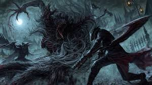
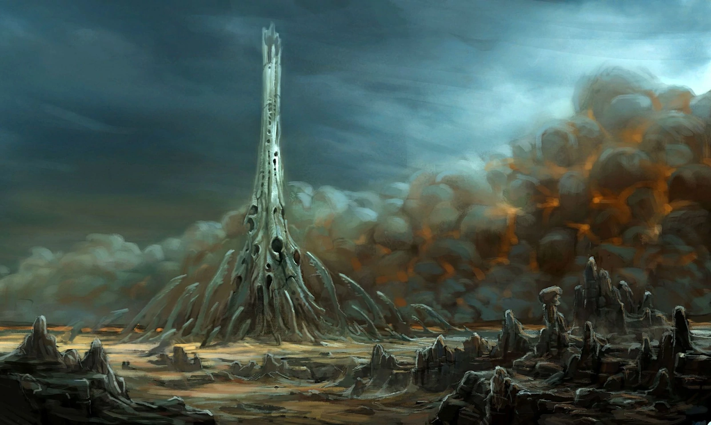

There has been an epidemic lately, strange skulk-like beasts have been sighted in the outskirts of town every night. People have been going missing, and now there's seems to be hooded figures seen lurking around the villages. I fear these are only the beginning of something much darker...
Features
Something is lurking out there
Encounter unpredictable, shadowy creatures that stalk the outskirts of towns.

Uncover Weapons and Relics
Weapons and tools lost to time, relics of power, and magics to aid your survival. Beast hunting made easier.

Rituals and Alchemy
Experiment with arcane rituals and elixirs left behind by those who came before.

Abandoned Settlements
Uncover abandoned villages, hidden ruins, and eerie forests teeming with secrets of the world beyond.